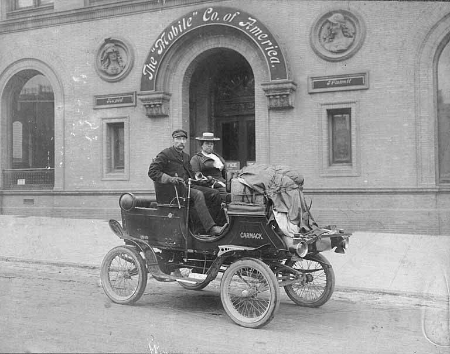

Chapter 2
The Prospector’s Map
The gravel bars at the mouth of the Klondike River showed their ribs in the low August light of 1896, a full year before the world would learn what lay beneath them. George Carmack knelt at the edge of a shallow cut where Rabbit Creek entered the larger stream, working a battered tin pan through the cold water in slow, circular tilts. The motion was old habit to him, as automatic as the stroke of an oar.
He had been panning creeks across the Yukon territory for six years without finding anything that would make a man rich.
Behind him, on the bank, Skookum Jim (Keish) and Tagish Charlie (Dawson Charlie) rested by their packs, watching the water and the tree line in turns. The three of them had come up the Klondike valley following a suggestion from a Canadian prospector named Robert Henderson, who believed the tributaries of this river had not been properly tested.
Carmack tilted the pan again. A flicker of color appeared in the black sand at the bottom, small and bright, caught in the rim like a scale from a fish.
The discovery on Bonanza Creek was not a bolt from the wilderness. It was the product of specific relationships and local knowledge, built from years of accumulated social connection among men who moved between the Indigenous and white mining worlds of the Yukon.
Carmack himself was the living bridge between those worlds. An American who had arrived in the territory in 1885, he had married into the Tagish people and lived, hunted, and traded with his wife’s family more than he worked any claim alongside the white miners at Forty Mile and Circle City. He spoke the Tagish language. He understood the seasonal migrations of the people whose trails crisscrossed the country the miners were only beginning to map. He was known among the white prospectors, but not entirely of them.
They called him “Lying George” behind his back, a nickname that captured the suspicion with which the mining community regarded a man who seemed to move between races with too much ease. He fished for salmon at the mouth of the Klondike when the runs came in. He prospected when the creeks opened. He trapped in winter. The rhythm of his life followed the country’s own cycles, not the calendar of a mining camp.
Robert Henderson was a different kind of man. A Canadian prospector with a methodical approach to the country, he had been working the tributaries flowing into the Klondike River through the summer of 1896, testing creeks that the main body of miners at Forty Mile had overlooked. Henderson was following geological logic. He believed the gold-bearing quartz veins that prospectors had found in other parts of the territory must also shed placer gold into the streams cutting through the same formations. He had explored Gold Bottom Creek, a tributary running south from the Klondike valley, and had found enough color there to encourage further search.
He told Carmack about the creek and suggested he try the streams nearby. Henderson was generous with his information in the way that prospectors sometimes were, when the country seemed too large for any one man to work and the cost of sharing a tip seemed small against the possibility of a strike.
But Henderson’s generosity had a boundary. The mining community of the Yukon operated on a code of mutual obligation that was informal but rigid. A prospector who shared a tip expected a share of what came of it, or at minimum the courtesy of being kept informed. Henderson later claimed that he had specifically asked Carmack to report back what he found on the creeks near Gold Bottom. The evidence for this request exists only in Henderson’s own later account, given in sworn statements and interviews after the discovery had become famous. Carmack never fully confirmed it. What the record shows is that Henderson visited Carmack’s fishing camp at the mouth of the Klondike, that the two men talked, and that Henderson described the country he had been exploring. Then Carmack, Jim, and Charlie went up the Klondike River without returning to Henderson’s camp on Gold Bottom.
The relationship between Henderson and Carmack is the first fracture in the record of the Klondike discovery.
Henderson would spend years arguing that he had been cheated of credit for the find, that Carmack had followed his direction to the gold-bearing ground and then cut him out of the claims. Carmack maintained that Henderson had suggested only that he try the area, not that he work under Henderson’s direction or share with him.
The disagreement went to the legal and moral architecture of the mining frontier, where the right to a claim depended on discovery and registration, and where the question of who had suggested where to look was inseparable from the question of who owned what was found. The conflict between Henderson and Carmack was present from the first day. It was born in the gap between a prospector’s expectation and a colleague’s interpretation of what he had been told, not manufactured later by lawyers.
The three men moved up the Klondike River in the second week of August 1896. The valley was thick with spruce and cottonwood, the creek bottoms boggy with summer runoff. They followed an old Indigenous trail that ran along the riverbank, a path that the Tagish and Hän people had used for generations to reach the interior hunting grounds. Carmack knew the trail. Jim and Charlie knew it better. The country was known to the people whose relatives had hunted and fished and traveled through it for centuries, and it was through that knowledge that the three men moved with a directness that no purely geological prospecting strategy could have produced. Henderson had explored by following the drainage. Carmack, Jim, and Charlie traveled by following a route.
They reached Rabbit Creek on August 16, 1896. The date is recorded in the claim registration filed the following day at the North-West Mounted Police (NWMP) post at the mouth of the Forty Mile River. The creek was a small stream, barely more than a trickle in the late summer dryness, running south from a low ridge of hills into the Klondike River. It had no reputation among miners. No one had staked it. No one had given it serious attention, because it lay off the main lines of prospecting that ran through the better-known creeks to the north. The name itself, Rabbit Creek, spoke to its insignificance. It was the kind of creek a man passed by.
Carmack set up camp near the mouth of the creek. The three men began to pan.
The work was grueling and mundane in the way that all placer prospecting was grueling and mundane. A man dug a hole in the gravel with a pick or shovel, breaking through the compacted surface layer of moss and root that held the frozen ground together. He filled a pan with the material from the hole, carried it to the creek, and washed it in the running water, tilting and rotating the pan to let the lighter sand and gravel spill over the rim while the heavier material, if there was any heavier material, settled to the bottom. The process was repeated dozens of times in a day. The hands blistered. The back ached. The water was cold enough to numb the fingers within minutes.
Most pans yielded nothing. A few yielded a few colors, the fine particles of gold that indicated the metal was present in the drainage but not in quantities worth working. A prospector could pan for weeks and find colors in every pan without ever finding enough gold to fill a thimble.
The accounts of what happened next diverge. The divergence is the central contested fact of the Klondike discovery, and it was contested from the moment the claims were registered.
In Carmack’s account, he was panning in the creek bed when he found a nugget, a piece of gold large enough to sit in the palm of a hand. He called Jim and Charlie over. They examined the find. They agreed to stake the creek. The discovery was his.
In Skookum Jim’s account, given in later years to family members and recorded in oral histories preserved among the Tagish people, Jim himself found the first nugget while cleaning out a hole in the bedrock. He showed it to Carmack. Carmack then took the credit, because under the mining law of the territory, a white man’s discovery claim was more easily registered and defended than a claim by an Indigenous man. Jim’s account suggests that the gold was found by the man whose knowledge of the country had brought the party to the creek, not by the man whose name appeared on the registration.
In Dawson Charlie’s account, which survives in fragmentary form in later newspaper interviews, Charlie was present at the discovery but did not claim to have found the first nugget himself. He confirmed that the find was made in the creek bed and that the three men agreed to stake together.
The records do not resolve the contradiction. The claim registration at the Forty Mile police post lists Carmack as the discoverer. Under the mining regulations in force in the Yukon, a discoverer was entitled to stake a double claim, two strips of ground along the creek, while his companions were each entitled to a single claim. Carmack registered two claims for himself and one each for Jim and Charlie. The registration was made on August 17, the day after the discovery. The police officer who recorded it was at the Forty Mile post, a small cluster of buildings at the confluence of the Forty Mile and Yukon rivers, where a handful of Mounted Police maintained Canadian authority over the mining district. The news spread rapidly from there to other mining camps in the Yukon River valley.
The registration was a formal act, not a dramatic one. No shout echoed through the valley. No crowd gathered on the banks. No celebration followed. Three men knelt in a creek bed in a remote valley fifty miles from the nearest settlement, found gold in the gravel, walked to a police post, and wrote their names in a register. The discovery was made on August 16 and recorded on August 17, and for several weeks afterward the only people who knew about it were the men who had made it, the police officer who had registered it, and the small circle of prospectors and traders who passed through Forty Mile on their way to other creeks.
The news spread through the mining community by the channels that always carried news in the Yukon. A man arrived at Forty Mile with a sample of the gold from Rabbit Creek. Another man carried the story to Circle City, two hundred miles down the Yukon. A trader at Fortymile mentioned it to a customer.
The Mounted Police, who maintained the most reliable communication network in the territory through their patrol routes and courier system, carried the information in their reports to the divisional headquarters. The discovery was registered, witnessed, and communicated through the institutions of the Canadian Yukon, not through any spontaneous eruption of frontier chaos. The law was present at the discovery. The police were present. The register was present. The Klondike gold rush, which would later be remembered as the last great free-for-all of the American frontier, was from its first moment a documented event under Canadian jurisdiction.
What the law could not settle was the question of credit. The register named Carmack as the discoverer. The oral histories named Jim. Henderson, who heard about the strike within days, insisted that the discovery belonged to him, because he had directed Carmack to the ground. Three men, three accounts, three claims to the same moment of finding. The conflict was present at the moment of registration, built into the structure of the mining code that gave a discoverer twice what it gave a companion, and that assumed a discoverer could be clearly identified by the act of filing first. The code was designed for a simpler world than the one it encountered on Rabbit Creek, where the man who found the gold, the man who registered the claim, and the man who suggested where to look were three different people.
The claims themselves were strips of ground. Under the mining regulations, a claim on a creek was measured as a length of stream bed, five hundred feet along the creek, extending from rim to rim. Carmack’s two claims lay at the mouth of Rabbit Creek where it entered the Klondike. Jim’s claim lay upstream. Charlie’s lay above Jim’s.
The ground was staked with posts and marked with the names of the claimants and the dates of the stakes. This was the physical act of creating claimed ground on Bonanza Creek, the original transformation of a wilderness valley into a set of legal properties that could be worked, sold, disputed, and defended. The posts were cut from spruce. The names were carved with a knife. The ground they marked would, within two years, be worth millions of dollars and would be fought over in courts and mining records offices for a decade after that.
Carmack renamed Rabbit Creek as Bonanza Creek when he registered the claims, giving the creek the name that would appear on all subsequent maps and records. The renaming was a claim in itself, a declaration that the creek was no longer the insignificant stream that prospectors had passed by. It was now a bonanza, a word that meant a strike, a fortune, a place where the ground paid. The name stuck. It appears in the police records, in the mining registry, in the newspapers that eventually carried the story to the outside world. Rabbit Creek vanished from the map. Bonanza Creek took its place.
The immediate aftermath of the discovery was quiet. Carmack, Jim, and Charlie worked their claims through the remaining weeks of August and into September, digging test holes and panning the gravel to confirm that the gold ran through the creek bed in paying quantities. The results were extraordinary. The gold was coarse, found in nuggets and flakes rather than fine dust, and it lay in a layer of gravel just above the bedrock, concentrated in the crevices and cracks of the slate and quartz that formed the creek’s floor. A single pan could yield several dollars’ worth of gold. A day’s work could yield more than a year’s wages for a laborer in San Francisco or Seattle. But the three men were alone in the valley. They worked their ground without competition, without spectators, and without the frenzy that would descend on the creek within months.
The news reached the other mining camps in stages. At Forty Mile, prospectors who had been working claims on the older creeks picked up their tools and moved. At Circle City, the largest mining camp on the Yukon, men packed their gear and headed upriver.
The stampede that followed the discovery was, in its first phase, a local affair. A few hundred men moved from one creek to another within a territory that was already a mining district. They did not come from the outside world. They came from Forty Mile and Circle City and the small camps along the Yukon and its tributaries.
These men had been living in the country for years, working claims on other creeks, and they moved to Bonanza because the news reached them where they already were. They carried their own tools. They held their own licenses. They answered to the same Mounted Police and the same mining regulations that governed every other creek in the district.
By the end of August, all of Bonanza Creek had been claimed by miners. The first Klondike stampede was an internal migration, a redistribution of men and tools within an existing system.
The discovery was registered but still contained. The freeze-up of the Yukon River was imminent, and once the river froze, no one could leave the territory and no one could enter it.
The news of the strike would be trapped inside the Yukon for the winter, carried by dog team and foot along the frozen trails but unable to reach the outside world until the ice broke in the spring. The three men who had found the gold, the police officer who had registered the claims, and the prospectors who had rushed to stake the neighboring ground were all locked in for the winter. The secret was out, but only within the territory. The world beyond the Chilkoot and White passes knew nothing of Bonanza Creek. The world beyond the Yukon delta knew nothing of George Carmack or Skookum Jim or Dawson Charlie.
The gold that would arrive in San Francisco and Seattle in July 1897, on the decks of the steamers Excelsior and Portland, remained buried in the deep gravels of Bonanza Creek and its feeder streams, locked under the same frost that would seal the river shut.

The river was already changing color where it ran shallow over the gravel bars, the water thickening with the sediment that signaled the first cold of fall. Within weeks, the ice would close the channel from bank to bank. The claims on Bonanza Creek would be frozen ground, locked under snow, and the men who had staked them would be locked in the country with what they had found. The discovery was a registered fact, and also a secret, held by the freeze of a river that no man could cross.